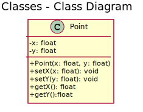
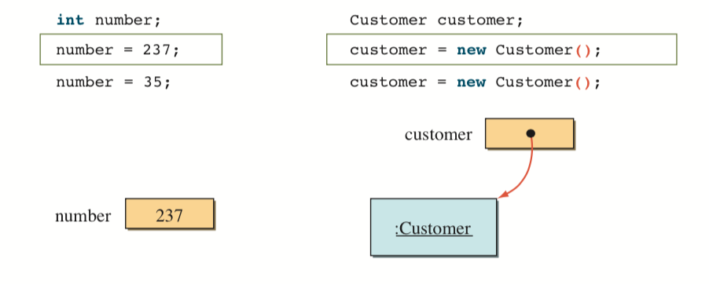

Programação Orientada a Objetos
Classes e Objetos
Prof. Rodrigo Habib GregoriClasses X Objetos

Definição de Classes
Definição de Classes
public class Point {
private float x;
private float y;
// Construtor
public Point(float x, float y) {
this.x = x;
this.y = y;
}
// Setters e getters
public void setX(float x) { this.x = x; }
public void setY(float y) { this.y = y; }
public float getX() { return x; }
public float getY() { return y; }
}
Lendo dados da entrada padrão
import java.util.Scanner;
// mais código (...)
Scanner input = new Scanner(System.in);
int a = input.nextInt();
double b = input.nextDouble();
String s = input.nextLine();
// etc....
Tipos primitivos x Tipos referência
Tipos primitivos (byte, char, short, int, long, float, double e boolean) são inicializados automaticamente com o valor 0 ou false, no caso do boolean
Tipos referência, como a classe Account, ou tipos objetos, são inicializados com o valor null.
Por quê?
Tipos primitivos x Tipos referência
Vamos trabalhar!
- De volta à classe Account, acrescentar uma variável de instância chamada balance (saldo), de tipo double.
- Modificar o construtor para receber um parâmetro de tipo double chamado também de balance. Atribua o valor de balance à variável de instância balance da classe account. (Como lidar com a sobreposição de nomes?)
- Agora modifique o código de forma que só seja possível atribuir o valor a balance caso o valor passado por parâmetro seja maior do que 0.
Continuando...
- Agora crie um método getBalance para retornar o valor do saldo. (variável balance)
- Por fim, crie um método deposit que efetuará um depósito na conta. Este método recebe um valor double por parâmetro e "somará" ao valor do saldo corrente, caso seja maior do que 0.
- Atualize a sua classe de teste (a que tem o método main para testar as novas funcionalidades.
Mais exercícios
Classe Account modificadaModifique a classe Account para fornecer um método chamado withdraw que retira dinheiro de uma Account. Assegure que o valor de débito não exceda o saldo da conta. Se exceder, o saldo deve ser deixado inalterado e o método deve imprimir uma mensagem que indica "Valor de débito excedeu o saldo da conta". Modifique a classe AccountTest para testar o método withdraw.
Crie uma classe chamada Invoice para que uma loja de suprimentos de informática a utilize para representar uma fatura de um item vendido nela. Uma Invoice (fatura) deve incluir quatro partes das informações como variáveis de instância — o número (tipo String), a descrição (tipo String), a quantidade comprada de um item (tipo int) e o preço por item (double). Sua classe deve ter um construtor que inicializa as quatro variáveis de instância.
Forneça um método set e um get para cada variável de instância. Além disso, forneça um método chamado getInvoiceAmount que calcula o valor de fatura (isto é, multiplica a quantidade pelo preço por item) e depois retorna esse valor como double.
Tanto no construtor, quanto nos métodos set, se a quantidade não for positiva, ela deve ser configurada como 0. Se o preço por item não for positivo, ele deve ser configurado como 0.0. Escreva um aplicativo de teste chamado InvoiceTest que demonstra as capacidades da classe Invoice.